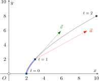

A drone is flying in the \({x-y}\) plane. The operator of the drone is located at the origin, \(O\). The motion of the drone is defined by the position vector
\begin{align*}
\vec{r}=\left(2+t^3\right)\hat{i} + \left(2t^2\right)\hat{j}
\end{align*}
where \(\vec{r}\) and \(t\) are expressed in meters and seconds, respectively. Determine (a) the distance between the drone and its operator at \(t=1\), (b) the distance the drone traveled in the interval from \(t=0\) to \(t=1~\)s. (c) the speed and direction of the drone's velocity at \(t=1~\)s. (d) the magnitude of the drone's acceleration at \(t=1~\)s.
Part (a)
The position of the drone at \(t=1~\) is
\begin{align*}
\vec{r}(t=1)=(2+1^3)\hat{i} + (2\cdot 1^2)\hat{j}=3\hat{i}+2\hat{j}
\end{align*}
The distance between the origin, \(O\), and and the drone is the length of the position vector
\begin{align*}
\vert\vec{r}(t=1)\vert=\sqrt{3^2 + 2^2}=\sqrt{13}=3.61~\textrm{m}
\end{align*}
Part (b)
This part is the hard part of the problem and could be skipped on a first reading. The figure below shows the trajectory of the drone in the vertical plane. The path shaded in blue is the section traveled between times \(0\) and \(1~\)seconds.

We need to integrate the distance along this curved path. The infinitesimal path length is given as
\begin{align*}
ds=\sqrt{dx^2+dy^2}
\end{align*}
where
\begin{align*}
dx=3t^2dt\qquad dy=4tdt
\end{align*}
\begin{align*} ds=\sqrt{dx^2+dy^2}=\sqrt{\left(3t^2dt\right)^2+\left(4tdt\right)^2}=\sqrt{9t^4+16t^2}dt
\end{align*}
Next we integrate along the path.
\begin{align*}
\int_0^s ds&=\int_0^1\sqrt{9t^4+16t^2}dt\\
s&=\left.\frac{1}{27}\left(16 + 9 t^2\right)^{3/2}\right\vert_0^1=\frac{1}{27}\left(125-64\right)=\frac{61}{27}=2.26~\textrm{m}
\end{align*}
Part (c)
For this part we need to find the velocity vector.
\begin{align*}
\vec{v}=\frac{d\vec{r}}{dt}=3t^2\hat{i}+4t\hat{j}
\end{align*}
At \(t=1\) we have,
\begin{align*}
\vec{v}(t=1)=3\hat{i}+4\hat{j}=5~\textrm{m/s}~\measuredangle 53.1^\circ
\end{align*}
Part (d)
To find the acceleration we differentiate again,
\begin{align*}
\vec{a}=\frac{d\vec{v}}{dt}=6t\hat{i}+4\hat{j}
\end{align*}
and at \(t=1\) we have,
\begin{align*}
\vec{a}(t=1)&=6\hat{i}+4\hat{j}\\
\vert\vec{a}\vert &= \sqrt{6^2+4^2}=7.21~\textrm{m/s}^2
\end{align*}